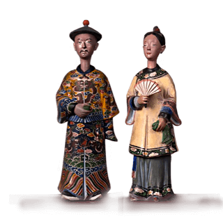

<div class="home-1">
    <div class="container">
        <div class="logo mobile-logo">
            <div class="logo__img">
                
            </div>
            <div class="logo__text">&nbsp; — Hu Xian</div>
        </div>
        <div class="home-1__box">
            <div class="home-1__left">
                <div class="home-1__left_img">
                    
                    
                </div>
            </div>
            <div class="home-1__right">
                <div class="logo desktop-logo">
                    <div class="logo__img">
                        
                    </div>
                </div>
                <h1 class="home-1__title title-1">一千年来的第一次</h1>
                <p class="text">
                    一千年来的第一次
                    几百年来居民的中间状态，中国人一直崇拜和祈祷的强大的精神力量的魔法狐狸。
                </p>
                <p class="text">
                    神奇的狐狸飞出其他维度和住在宫殿的北斗恒星模式。 玉英白拉多，船长的宇宙已经发送和今天将魔法狐狸的地球知识的善良和任何人。
                </p>
                <p class="text">
                    在首次魔法狐狸采取的形式是因为森林狐狸的玉石英白拉多秩序。 在那之后，把测试的导师，他们得到了他们的魔力。
                </p>
                <p class="text">
                    从森林中狐狸的魔法狐狸变成美丽的少女或聪明的老男人、有才华的年轻人或合理的官僚、保存它的魅力在这些表格。 最常见的魔法狐狸变成的形式有智慧的人、丈夫和妻子先生和胡女士。
                </p>
            </div>
        </div>
    </div>
    <!-- /.container -->
</div>
<!-- /.home-1 -->